2024年5月去吃的😄
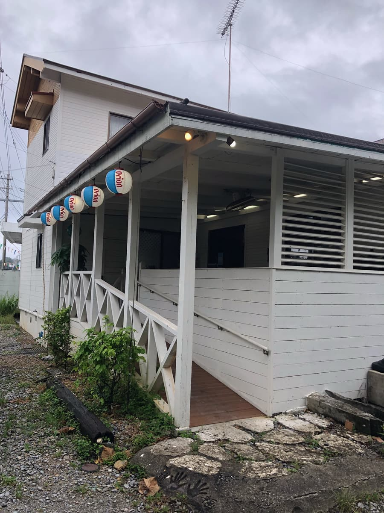
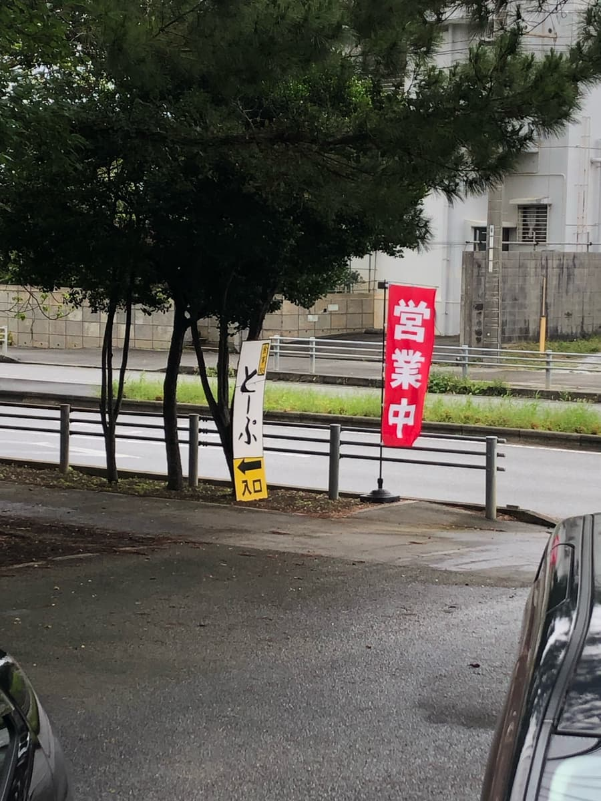
我是因为这家店被地方报纸介绍才知道的。
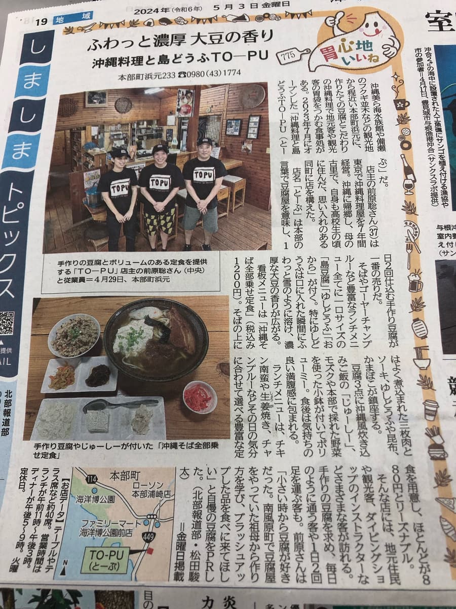
根据报纸，店名的「托普」在本部的方言中是豆腐店的意思，一天备料两次的手工豆腐是最大卖点😁
报导介绍招牌菜单是「冲绳面全配料定食」，所以就决定点这个。
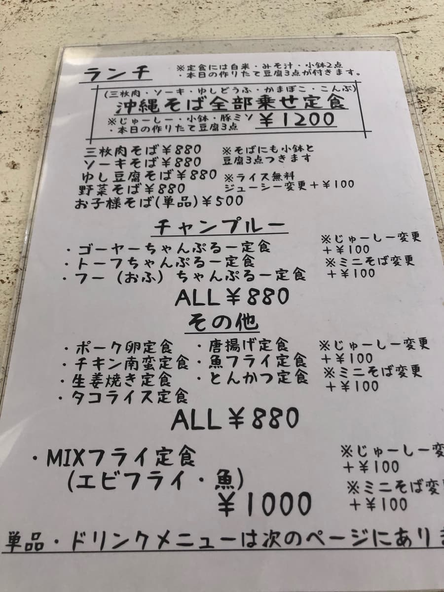
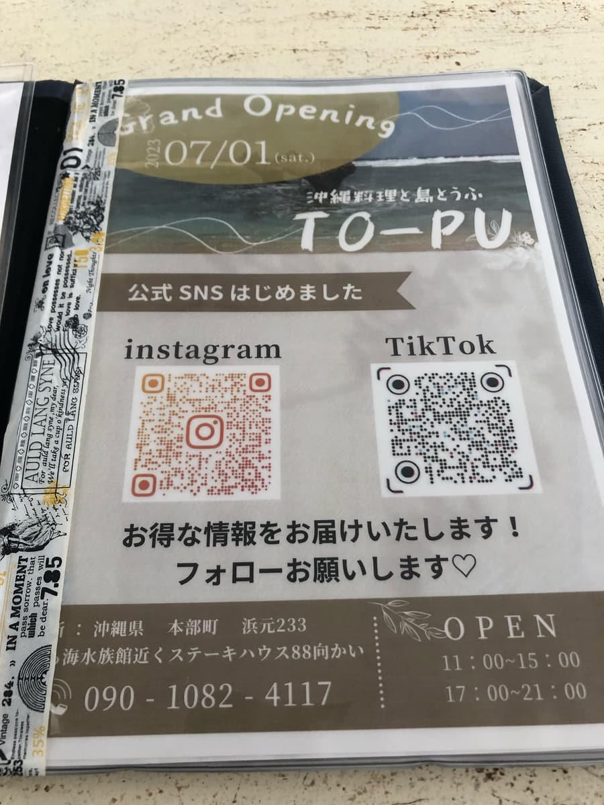
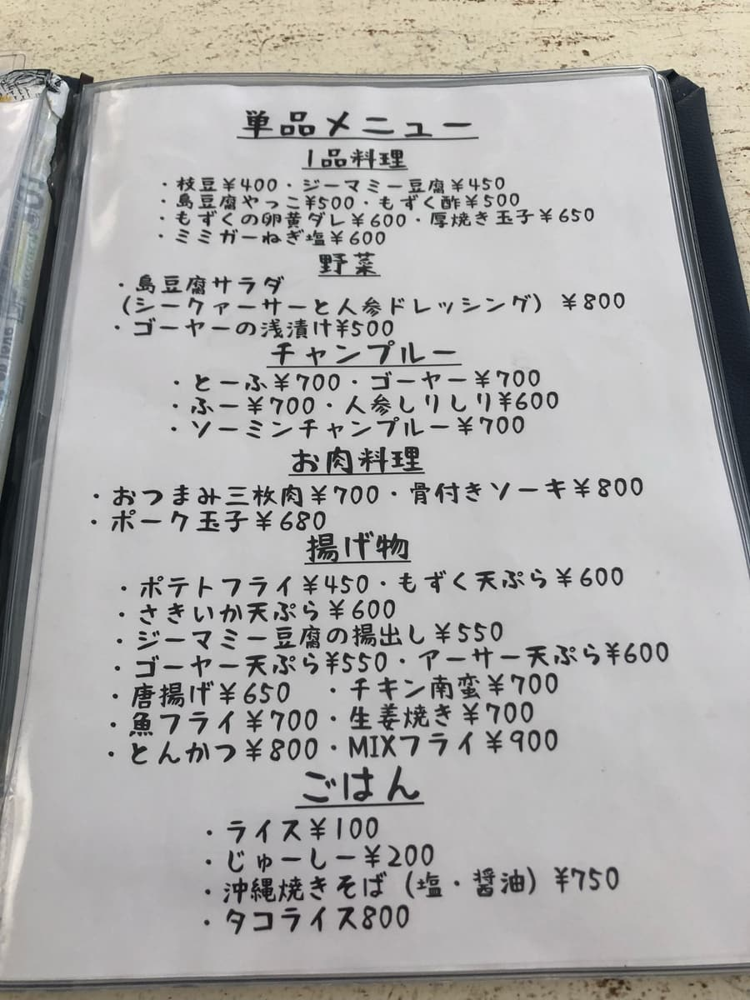
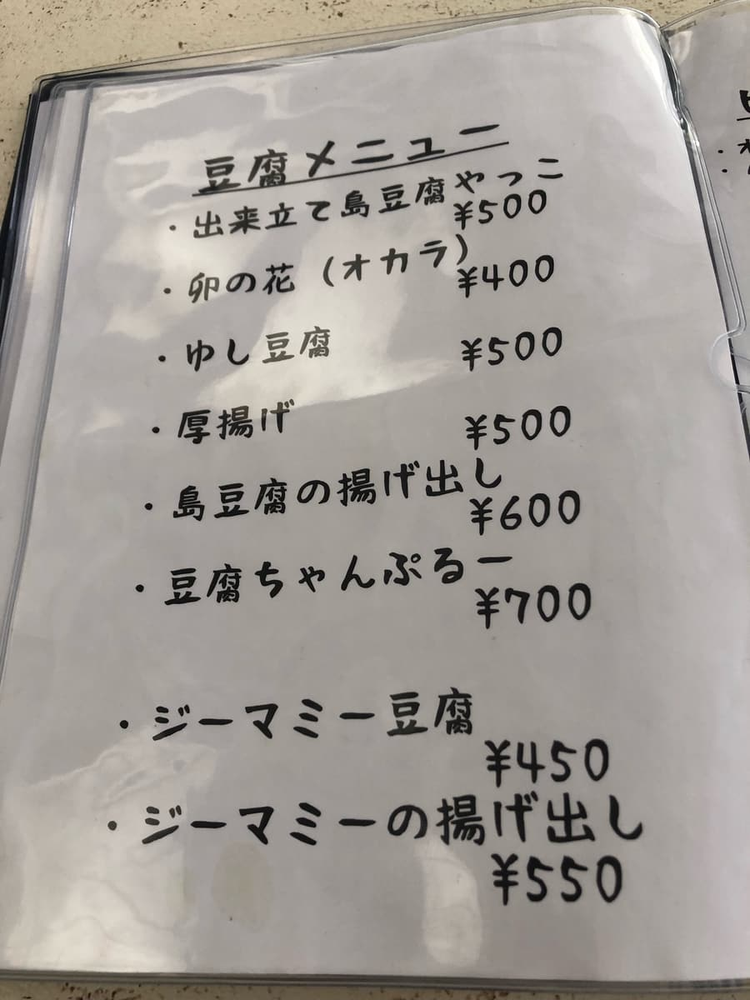
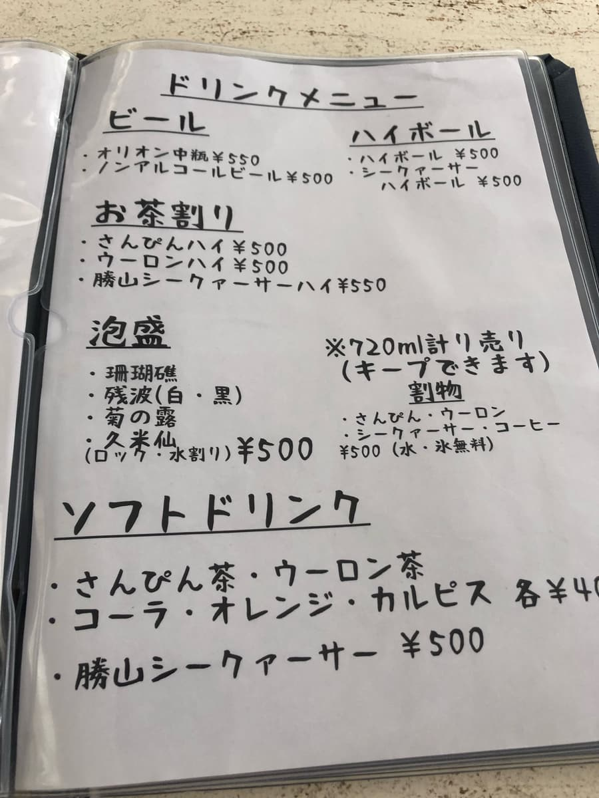
店内因为是中午时段很挤，所以在户外的桌子享用。
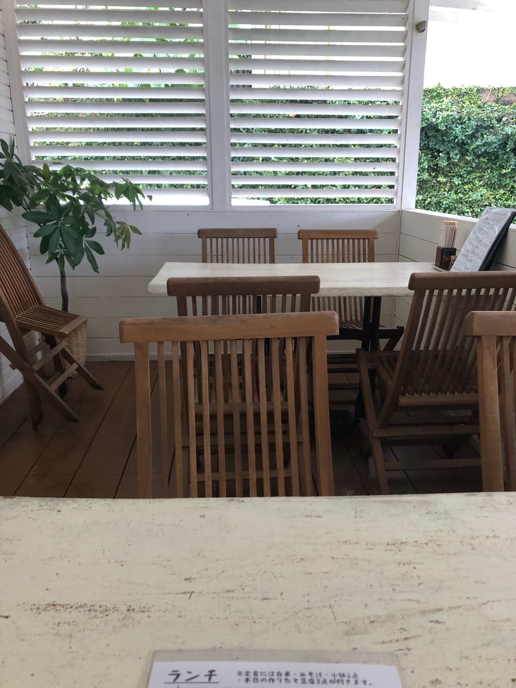
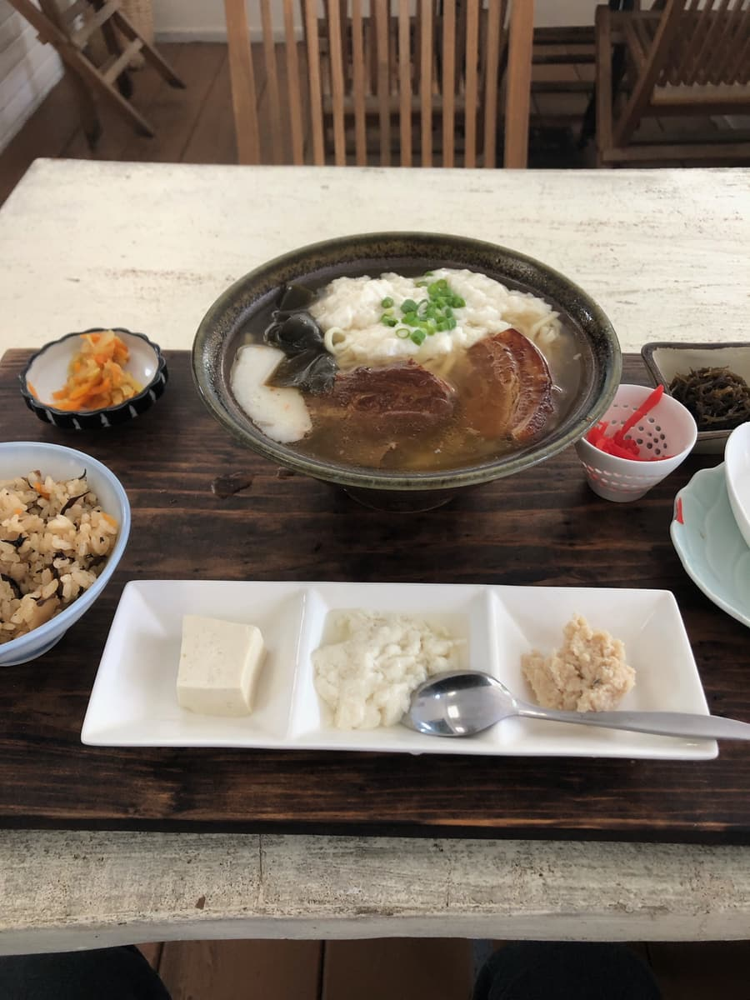
前菜是三种手工豆腐。可以品尝到一口大小的「豆渣」、「冲绳嫩豆腐」、「冲绳岛豆腐」。店员说明因为已经调过味了，请不要沾任何东西直接吃。就是普通的好吃😆
汤是柴鱼和猪骨的混合高汤，猪骨味明显。就是普通的好吃。
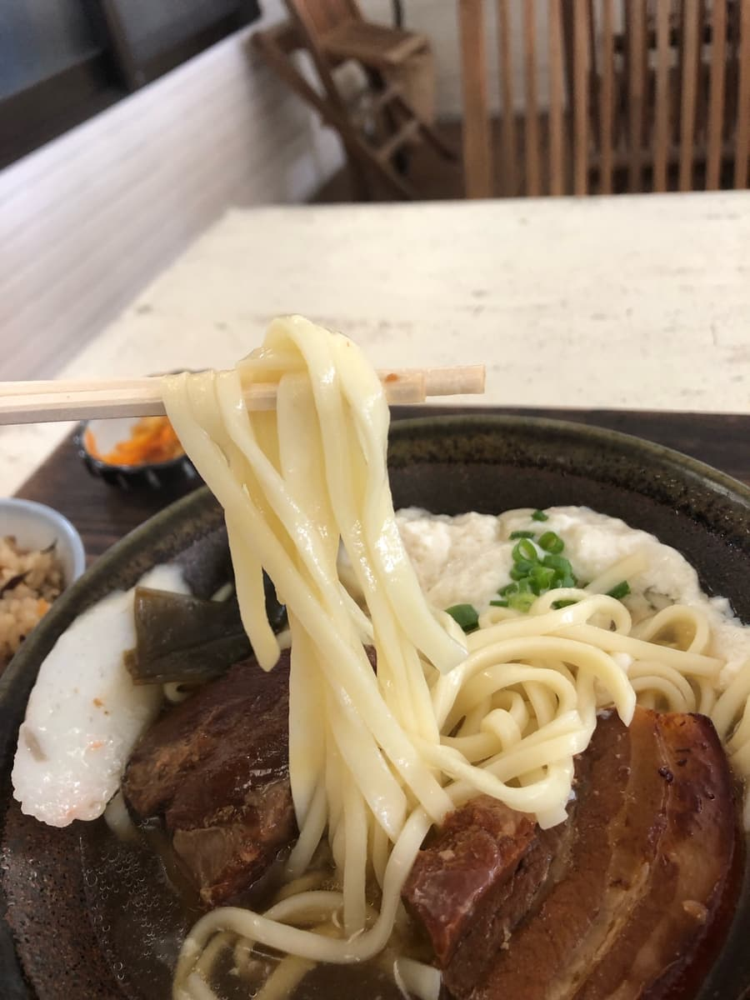
接着吃面。是中粗直面，断面看起来像扁面，是偏软的类型。
配料的三层肉和排骨有点干柴，有些地方还留有筋感（口感偏韧）。
放在冲绳面上的冲绳嫩豆腐是手工的，松软柔嫩呢😁
评分（9分/15分）：就是普通的好吃😄 当地客人和观光客都很多。因为离美丽海水族馆很近，要不要也顺道来这里看看呢？
面：★★★☆☆（3）
汤头：★★★☆☆（3）
配料：★★★☆☆（3）